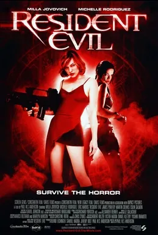

The genetics
Genetic engineering appears as the activity of a ruthless corporation. The Umbrella Corporation runs a hidden underground laboratory where it develops the T-virus, a genetically engineered virus that reanimates the dead and that has been used to create monsters, as well as an antivirus to counter it. The research is illegal and secret, and the scientists remain faceless employees of the corporation: when the virus escapes, the company's response is to seal the laboratory with its staff inside and later to reopen it for study, while turning the survivors into new experimental subjects. The film reflects a common fear about biotechnology: that commercial research on dangerous pathogens, kept away from public scrutiny, could cause a catastrophe. The T-virus itself is fantasy, as no virus can bring the dead back to life.
The story
Beneath Raccoon City lies the Hive, a secret genetic research facility owned by the Umbrella Corporation. When a thief steals the genetically engineered T-virus and releases it inside, the facility's artificial intelligence, the Red Queen, seals the Hive and kills everyone in it. Alice wakes up with amnesia in a mansion above the facility and is taken down into the Hive by a team of Umbrella commandos, together with a police officer, Matt, and another amnesiac, Spence. Once they shut down the Red Queen, the infected staff rise as zombies, together with Lickers, creatures created through experiments with the virus. As the group fights its way out, Alice remembers that she was helping Matt's sister, an activist, to expose Umbrella's illegal experiments, and Spence turns out to be the thief. Only Alice and Matt survive, but Umbrella scientists take them; Matt is assigned to the Nemesis programme, and Alice later wakes up to find Raccoon City devastated.